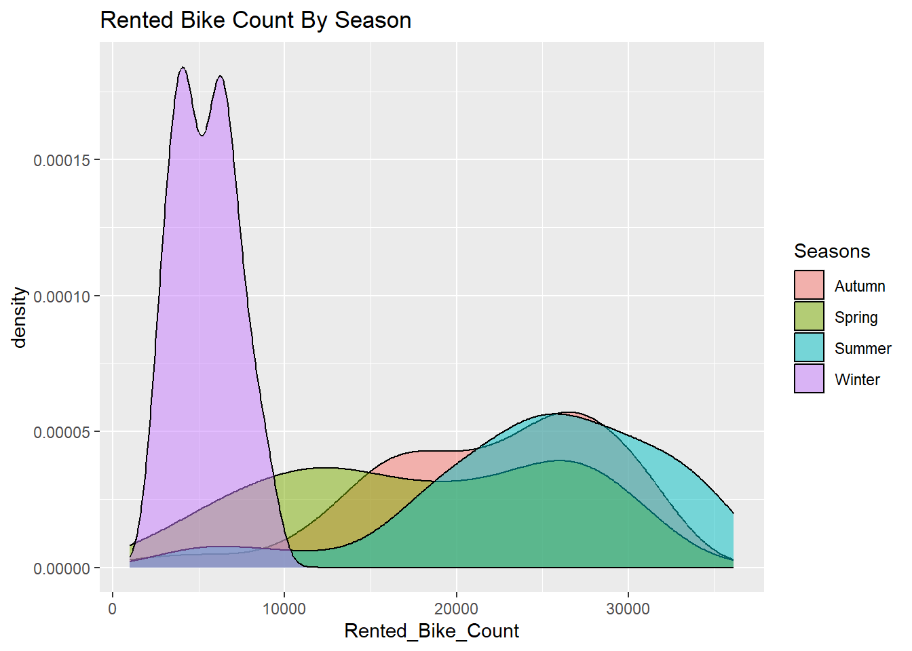
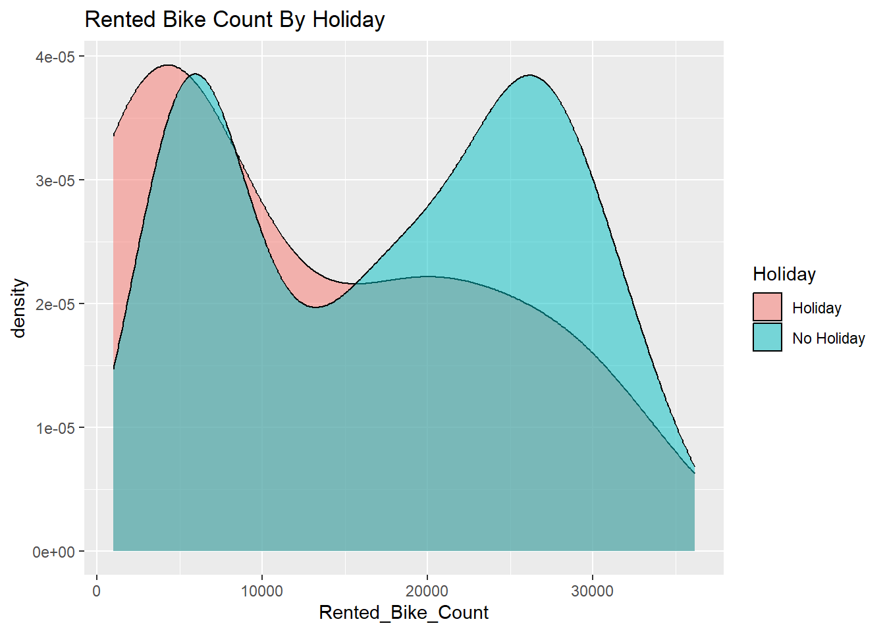
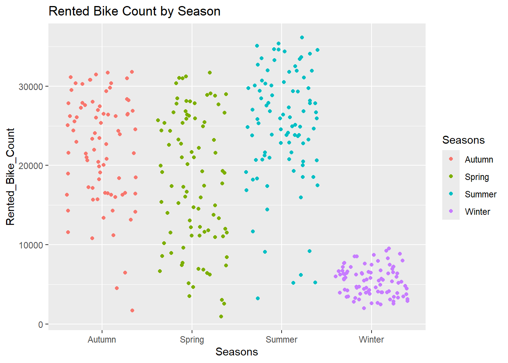
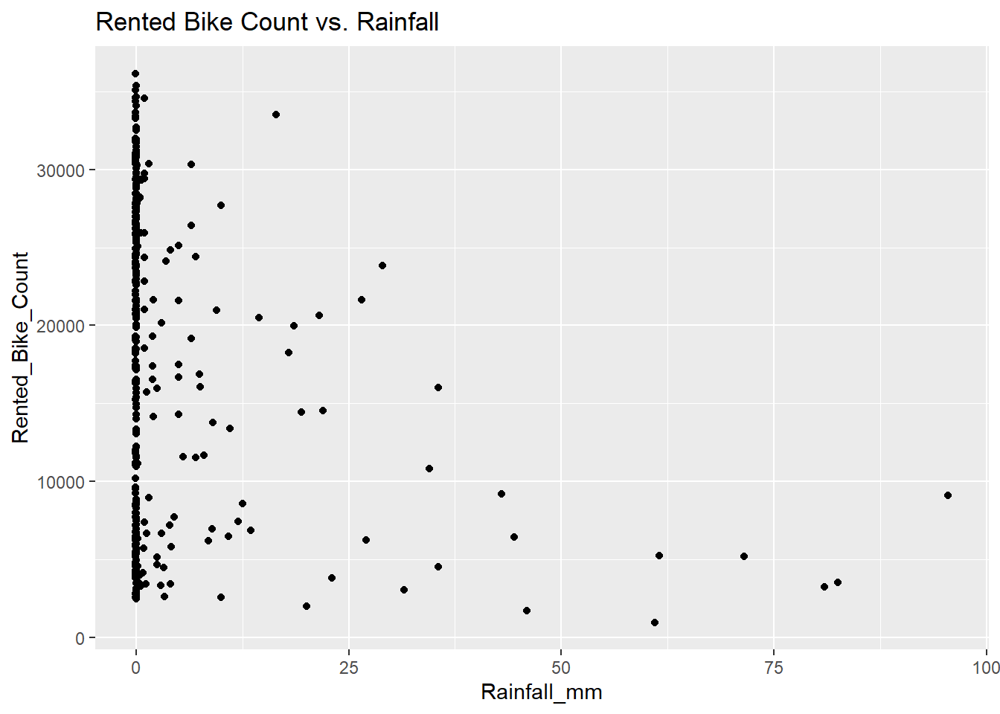
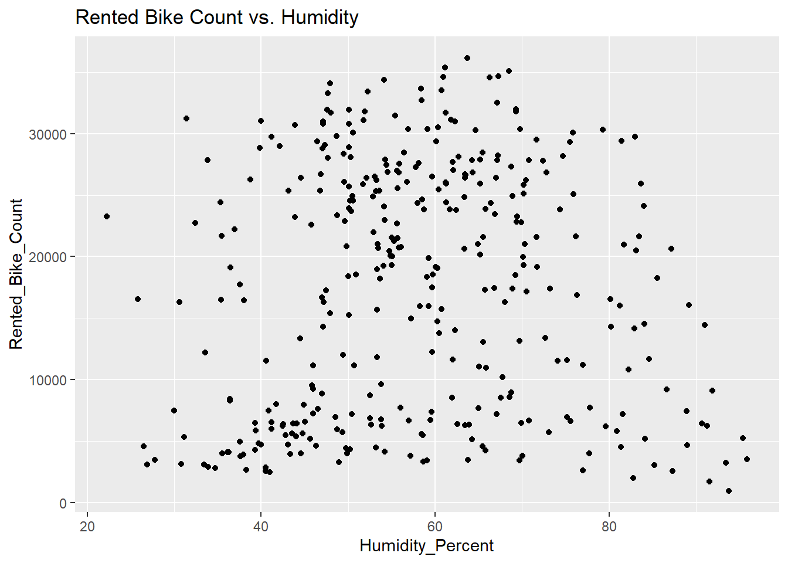
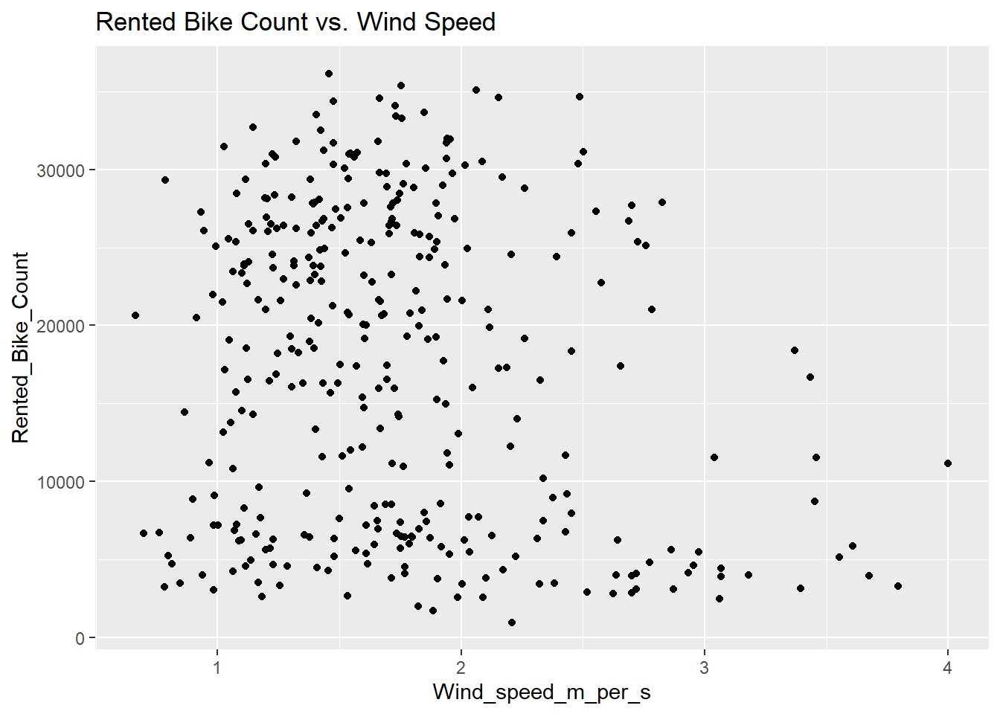

library(readr)
library(tidyverse)
library(lubridate)
library(corrr)
library(tidymodels)
df <- readr::read_csv("SeoulBikeData.csv", locale=locale(encoding="latin1"))
head(df)Homework8
Reading Data
EDA
First, let’s rename the columns to make them easier to work with:
colnames(df) <- gsub(" ", "_", colnames(df))
df <- df |>
rename("Temperature_C"="Temperature(°C)") |>
rename("Humidity_Percent"="Humidity(%)") |>
rename("Wind_speed_m_per_s"="Wind_speed_(m/s)") |>
rename("Visibility_10m"="Visibility_(10m)") |>
rename("Dew_point_temperature_C"="Dew_point_temperature(°C)") |>
rename("Solar_Radiation_MJ_per_sq_m"="Solar_Radiation_(MJ/m2)") |>
rename("Rainfall_mm"="Rainfall(mm)") |>
rename("Snowfall_cm"="Snowfall_(cm)")
head(df)# A tibble: 6 × 14
Date Rented_Bike_Count Hour Temperature_C Humidity_Percent
<chr> <dbl> <dbl> <dbl> <dbl>
1 01/12/2017 254 0 -5.2 37
2 01/12/2017 204 1 -5.5 38
3 01/12/2017 173 2 -6 39
4 01/12/2017 107 3 -6.2 40
5 01/12/2017 78 4 -6 36
6 01/12/2017 100 5 -6.4 37
# ℹ 9 more variables: Wind_speed_m_per_s <dbl>, Visibility_10m <dbl>,
# Dew_point_temperature_C <dbl>, Solar_Radiation_MJ_per_sq_m <dbl>,
# Rainfall_mm <dbl>, Snowfall_cm <dbl>, Seasons <chr>, Holiday <chr>,
# Functioning_Day <chr>Let’s do some checking to validate the dataset before we build a model with it:
# check for missing values
sum_na <- function(column){
sum(is.na(column))
}
na_counts <- df |>
summarize(across(everything(), sum_na))
na_counts# A tibble: 1 × 14
Date Rented_Bike_Count Hour Temperature_C Humidity_Percent
<int> <int> <int> <int> <int>
1 0 0 0 0 0
# ℹ 9 more variables: Wind_speed_m_per_s <int>, Visibility_10m <int>,
# Dew_point_temperature_C <int>, Solar_Radiation_MJ_per_sq_m <int>,
# Rainfall_mm <int>, Snowfall_cm <int>, Seasons <int>, Holiday <int>,
# Functioning_Day <int>There are no NA values in our data. What are the values seen?
cat_vars <- c("Date", "Seasons", "Holiday", "Functioning_Day")
for (var in cat_vars){
print(head(unique(df[var])))
}# A tibble: 6 × 1
Date
<chr>
1 01/12/2017
2 02/12/2017
3 03/12/2017
4 04/12/2017
5 05/12/2017
6 06/12/2017
# A tibble: 4 × 1
Seasons
<chr>
1 Winter
2 Spring
3 Summer
4 Autumn
# A tibble: 2 × 1
Holiday
<chr>
1 No Holiday
2 Holiday
# A tibble: 2 × 1
Functioning_Day
<chr>
1 Yes
2 No table(df$Seasons)
Autumn Spring Summer Winter
2184 2208 2208 2160 table(df$Holiday)
Holiday No Holiday
432 8328 table(df$Functioning_Day)
No Yes
295 8465 Convert the Date column to actual date type and other categorical variables into factors:
df <- df |>
mutate(Date = parse_date_time(Date, "dmy")) |>
mutate(Seasons = as.factor(Seasons)) |>
mutate(Holiday = as.factor(Holiday))|>
mutate(Functioning_Day = as.factor(Functioning_Day))
df# A tibble: 8,760 × 14
Date Rented_Bike_Count Hour Temperature_C Humidity_Percent
<dttm> <dbl> <dbl> <dbl> <dbl>
1 2017-12-01 00:00:00 254 0 -5.2 37
2 2017-12-01 00:00:00 204 1 -5.5 38
3 2017-12-01 00:00:00 173 2 -6 39
4 2017-12-01 00:00:00 107 3 -6.2 40
5 2017-12-01 00:00:00 78 4 -6 36
6 2017-12-01 00:00:00 100 5 -6.4 37
7 2017-12-01 00:00:00 181 6 -6.6 35
8 2017-12-01 00:00:00 460 7 -7.4 38
9 2017-12-01 00:00:00 930 8 -7.6 37
10 2017-12-01 00:00:00 490 9 -6.5 27
# ℹ 8,750 more rows
# ℹ 9 more variables: Wind_speed_m_per_s <dbl>, Visibility_10m <dbl>,
# Dew_point_temperature_C <dbl>, Solar_Radiation_MJ_per_sq_m <dbl>,
# Rainfall_mm <dbl>, Snowfall_cm <dbl>, Seasons <fct>, Holiday <fct>,
# Functioning_Day <fct>Calculate summaries to check in with numeric variables:
# function for finding measures of center and spread
find_center_and_spread <- function(df) {
return(df|>
summarize(across(where(is.numeric),
list("mean" = mean, "median" = median, "sd"=sd, "IQR"=IQR),
.names = "{.fn}_{.col}")))
}
# find centers and spread for all numeric vars
find_center_and_spread(df)# A tibble: 1 × 40
mean_Rented_Bike_Count median_Rented_Bike_Count sd_Rented_Bike_Count
<dbl> <dbl> <dbl>
1 705. 504. 645.
# ℹ 37 more variables: IQR_Rented_Bike_Count <dbl>, mean_Hour <dbl>,
# median_Hour <dbl>, sd_Hour <dbl>, IQR_Hour <dbl>, mean_Temperature_C <dbl>,
# median_Temperature_C <dbl>, sd_Temperature_C <dbl>,
# IQR_Temperature_C <dbl>, mean_Humidity_Percent <dbl>,
# median_Humidity_Percent <dbl>, sd_Humidity_Percent <dbl>,
# IQR_Humidity_Percent <dbl>, mean_Wind_speed_m_per_s <dbl>,
# median_Wind_speed_m_per_s <dbl>, sd_Wind_speed_m_per_s <dbl>, …Now that we have cleaned up our column names and datatypes, as well as validated the values in the dataset and confirmed there are no missing values, let’s look more into the relationships between our target variable (Rented_Bike_Count) and other variables.
# summarize across categorical variables
# function for finding measures of center and spread
find_center_and_spread_grouped <- function(df, group) {
return(df|>
group_by({{group}}) |>
summarize(across(where(is.numeric),
list("mean" = mean, "median" = median, "sd"=sd, "IQR"=IQR),
.names = "{.fn}_{.col}")))
}
# find centers and spread for all numeric vars, grouped by cat vars
find_center_and_spread_grouped(df, Seasons)# A tibble: 4 × 41
Seasons mean_Rented_Bike_Count median_Rented_Bike_Count sd_Rented_Bike_Count
<fct> <dbl> <dbl> <dbl>
1 Autumn 820. 764. 651.
2 Spring 730. 583 622.
3 Summer 1034. 906. 690.
4 Winter 226. 203 150.
# ℹ 37 more variables: IQR_Rented_Bike_Count <dbl>, mean_Hour <dbl>,
# median_Hour <dbl>, sd_Hour <dbl>, IQR_Hour <dbl>, mean_Temperature_C <dbl>,
# median_Temperature_C <dbl>, sd_Temperature_C <dbl>,
# IQR_Temperature_C <dbl>, mean_Humidity_Percent <dbl>,
# median_Humidity_Percent <dbl>, sd_Humidity_Percent <dbl>,
# IQR_Humidity_Percent <dbl>, mean_Wind_speed_m_per_s <dbl>,
# median_Wind_speed_m_per_s <dbl>, sd_Wind_speed_m_per_s <dbl>, …find_center_and_spread_grouped(df, Holiday)# A tibble: 2 × 41
Holiday mean_Rented_Bike_Count median_Rented_Bike_Co…¹ sd_Rented_Bike_Count
<fct> <dbl> <dbl> <dbl>
1 Holiday 500. 240 571.
2 No Holiday 715. 524. 647.
# ℹ abbreviated name: ¹median_Rented_Bike_Count
# ℹ 37 more variables: IQR_Rented_Bike_Count <dbl>, mean_Hour <dbl>,
# median_Hour <dbl>, sd_Hour <dbl>, IQR_Hour <dbl>, mean_Temperature_C <dbl>,
# median_Temperature_C <dbl>, sd_Temperature_C <dbl>,
# IQR_Temperature_C <dbl>, mean_Humidity_Percent <dbl>,
# median_Humidity_Percent <dbl>, sd_Humidity_Percent <dbl>,
# IQR_Humidity_Percent <dbl>, mean_Wind_speed_m_per_s <dbl>, …find_center_and_spread_grouped(df, Functioning_Day)# A tibble: 2 × 41
Functioning_Day mean_Rented_Bike_Count median_Rented_Bike_Count
<fct> <dbl> <dbl>
1 No 0 0
2 Yes 729. 542
# ℹ 38 more variables: sd_Rented_Bike_Count <dbl>, IQR_Rented_Bike_Count <dbl>,
# mean_Hour <dbl>, median_Hour <dbl>, sd_Hour <dbl>, IQR_Hour <dbl>,
# mean_Temperature_C <dbl>, median_Temperature_C <dbl>,
# sd_Temperature_C <dbl>, IQR_Temperature_C <dbl>,
# mean_Humidity_Percent <dbl>, median_Humidity_Percent <dbl>,
# sd_Humidity_Percent <dbl>, IQR_Humidity_Percent <dbl>,
# mean_Wind_speed_m_per_s <dbl>, median_Wind_speed_m_per_s <dbl>, …Notes:
- All Rented_Bike_Count values are 0 for Functioning_Day=No. Since the effects of other variables cannot influence the rentals on these days, we can filter them out to get a better picture of how the other variables influence the target.
- Rented_Bike_Count is lower for holidays.
- Rented_Bike_Count is highest in summer, followed by autumn, spring, and winter.
Subset the data to filter out Functioning_Day=No:
df_filtered <- df |>
filter(Functioning_Day=='Yes')
df# A tibble: 8,760 × 14
Date Rented_Bike_Count Hour Temperature_C Humidity_Percent
<dttm> <dbl> <dbl> <dbl> <dbl>
1 2017-12-01 00:00:00 254 0 -5.2 37
2 2017-12-01 00:00:00 204 1 -5.5 38
3 2017-12-01 00:00:00 173 2 -6 39
4 2017-12-01 00:00:00 107 3 -6.2 40
5 2017-12-01 00:00:00 78 4 -6 36
6 2017-12-01 00:00:00 100 5 -6.4 37
7 2017-12-01 00:00:00 181 6 -6.6 35
8 2017-12-01 00:00:00 460 7 -7.4 38
9 2017-12-01 00:00:00 930 8 -7.6 37
10 2017-12-01 00:00:00 490 9 -6.5 27
# ℹ 8,750 more rows
# ℹ 9 more variables: Wind_speed_m_per_s <dbl>, Visibility_10m <dbl>,
# Dew_point_temperature_C <dbl>, Solar_Radiation_MJ_per_sq_m <dbl>,
# Rainfall_mm <dbl>, Snowfall_cm <dbl>, Seasons <fct>, Holiday <fct>,
# Functioning_Day <fct>df_filtered# A tibble: 8,465 × 14
Date Rented_Bike_Count Hour Temperature_C Humidity_Percent
<dttm> <dbl> <dbl> <dbl> <dbl>
1 2017-12-01 00:00:00 254 0 -5.2 37
2 2017-12-01 00:00:00 204 1 -5.5 38
3 2017-12-01 00:00:00 173 2 -6 39
4 2017-12-01 00:00:00 107 3 -6.2 40
5 2017-12-01 00:00:00 78 4 -6 36
6 2017-12-01 00:00:00 100 5 -6.4 37
7 2017-12-01 00:00:00 181 6 -6.6 35
8 2017-12-01 00:00:00 460 7 -7.4 38
9 2017-12-01 00:00:00 930 8 -7.6 37
10 2017-12-01 00:00:00 490 9 -6.5 27
# ℹ 8,455 more rows
# ℹ 9 more variables: Wind_speed_m_per_s <dbl>, Visibility_10m <dbl>,
# Dew_point_temperature_C <dbl>, Solar_Radiation_MJ_per_sq_m <dbl>,
# Rainfall_mm <dbl>, Snowfall_cm <dbl>, Seasons <fct>, Holiday <fct>,
# Functioning_Day <fct>Combine the rows into 1 row for each day:
day_df <- df_filtered |>
group_by(Date, Seasons, Holiday) |>
summarise(across(c(Rented_Bike_Count, Rainfall_mm, Snowfall_cm), sum),
across(c(Temperature_C, Humidity_Percent, Wind_speed_m_per_s, Visibility_10m, Dew_point_temperature_C, Solar_Radiation_MJ_per_sq_m),
mean),
.groups='drop')
head(day_df)# A tibble: 6 × 12
Date Seasons Holiday Rented_Bike_Count Rainfall_mm Snowfall_cm
<dttm> <fct> <fct> <dbl> <dbl> <dbl>
1 2017-12-01 00:00:00 Winter No Holi… 9539 0 0
2 2017-12-02 00:00:00 Winter No Holi… 8523 0 0
3 2017-12-03 00:00:00 Winter No Holi… 7222 4 0
4 2017-12-04 00:00:00 Winter No Holi… 8729 0.1 0
5 2017-12-05 00:00:00 Winter No Holi… 8307 0 0
6 2017-12-06 00:00:00 Winter No Holi… 6669 1.3 8.6
# ℹ 6 more variables: Temperature_C <dbl>, Humidity_Percent <dbl>,
# Wind_speed_m_per_s <dbl>, Visibility_10m <dbl>,
# Dew_point_temperature_C <dbl>, Solar_Radiation_MJ_per_sq_m <dbl>Now that the data has been combined for each day, we’ll take another look at our summary statistics for categorical and numerical variables:
# categorical vars:
table(day_df$Seasons)
Autumn Spring Summer Winter
81 90 92 90 table(day_df$Holiday)
Holiday No Holiday
17 336 # numerical vars:
find_center_and_spread(day_df)# A tibble: 1 × 36
mean_Rented_Bike_Count median_Rented_Bike_Count sd_Rented_Bike_Count
<dbl> <dbl> <dbl>
1 17485. 18563 9937.
# ℹ 33 more variables: IQR_Rented_Bike_Count <dbl>, mean_Rainfall_mm <dbl>,
# median_Rainfall_mm <dbl>, sd_Rainfall_mm <dbl>, IQR_Rainfall_mm <dbl>,
# mean_Snowfall_cm <dbl>, median_Snowfall_cm <dbl>, sd_Snowfall_cm <dbl>,
# IQR_Snowfall_cm <dbl>, mean_Temperature_C <dbl>,
# median_Temperature_C <dbl>, sd_Temperature_C <dbl>,
# IQR_Temperature_C <dbl>, mean_Humidity_Percent <dbl>,
# median_Humidity_Percent <dbl>, sd_Humidity_Percent <dbl>, …find_center_and_spread_grouped(day_df, Seasons)# A tibble: 4 × 37
Seasons mean_Rented_Bike_Count median_Rented_Bike_Count sd_Rented_Bike_Count
<fct> <dbl> <dbl> <dbl>
1 Autumn 22099. 23350 6711.
2 Spring 17910. 17590 8357.
3 Summer 24818. 25572. 7297.
4 Winter 5413. 5498 1808.
# ℹ 33 more variables: IQR_Rented_Bike_Count <dbl>, mean_Rainfall_mm <dbl>,
# median_Rainfall_mm <dbl>, sd_Rainfall_mm <dbl>, IQR_Rainfall_mm <dbl>,
# mean_Snowfall_cm <dbl>, median_Snowfall_cm <dbl>, sd_Snowfall_cm <dbl>,
# IQR_Snowfall_cm <dbl>, mean_Temperature_C <dbl>,
# median_Temperature_C <dbl>, sd_Temperature_C <dbl>,
# IQR_Temperature_C <dbl>, mean_Humidity_Percent <dbl>,
# median_Humidity_Percent <dbl>, sd_Humidity_Percent <dbl>, …find_center_and_spread_grouped(day_df, Holiday)# A tibble: 2 × 37
Holiday mean_Rented_Bike_Count median_Rented_Bike_Co…¹ sd_Rented_Bike_Count
<fct> <dbl> <dbl> <dbl>
1 Holiday 12700. 7184 10504.
2 No Holiday 17727. 19104. 9862.
# ℹ abbreviated name: ¹median_Rented_Bike_Count
# ℹ 33 more variables: IQR_Rented_Bike_Count <dbl>, mean_Rainfall_mm <dbl>,
# median_Rainfall_mm <dbl>, sd_Rainfall_mm <dbl>, IQR_Rainfall_mm <dbl>,
# mean_Snowfall_cm <dbl>, median_Snowfall_cm <dbl>, sd_Snowfall_cm <dbl>,
# IQR_Snowfall_cm <dbl>, mean_Temperature_C <dbl>,
# median_Temperature_C <dbl>, sd_Temperature_C <dbl>,
# IQR_Temperature_C <dbl>, mean_Humidity_Percent <dbl>, …Exploring relationships: plots and correlation values
# categorical vars
ggplot(day_df, aes(x = Rented_Bike_Count)) + geom_density(alpha = 0.5, aes(fill = Seasons)) + ggtitle("Rented Bike Count By Season")
ggplot(day_df, aes(x = Rented_Bike_Count)) + geom_density(alpha = 0.5, aes(fill = Holiday)) + ggtitle("Rented Bike Count By Holiday")
# numerical vars
ggplot(day_df, aes(x = Seasons, y = Rented_Bike_Count, color = Seasons)) + geom_point(position = "jitter") + ggtitle("Rented Bike Count by Season")
ggplot(day_df, aes(x = Rainfall_mm, y = Rented_Bike_Count)) + geom_point(position = "jitter") + ggtitle("Rented Bike Count vs. Rainfall")
ggplot(day_df, aes(x = Humidity_Percent, y = Rented_Bike_Count)) + geom_point(position = "jitter") + ggtitle("Rented Bike Count vs. Humidity")
ggplot(day_df, aes(x = Wind_speed_m_per_s, y = Rented_Bike_Count)) + geom_point(position = "jitter") + ggtitle("Rented Bike Count vs. Wind Speed")
# correlation
day_df |>
select(where(is.numeric)) |>
correlate()Correlation computed with
• Method: 'pearson'
• Missing treated using: 'pairwise.complete.obs'# A tibble: 9 × 10
term Rented_Bike_Count Rainfall_mm Snowfall_cm Temperature_C Humidity_Percent
<chr> <dbl> <dbl> <dbl> <dbl> <dbl>
1 Rent… NA -0.239 -0.265 0.753 0.0359
2 Rain… -0.239 NA -0.0231 0.145 0.529
3 Snow… -0.265 -0.0231 NA -0.267 0.0654
4 Temp… 0.753 0.145 -0.267 NA 0.404
5 Humi… 0.0359 0.529 0.0654 0.404 NA
6 Wind… -0.193 -0.102 0.0209 -0.261 -0.234
7 Visi… 0.166 -0.222 -0.102 0.00234 -0.559
8 Dew_… 0.650 0.265 -0.210 0.963 0.632
9 Sola… 0.736 -0.323 -0.233 0.550 -0.274
# ℹ 4 more variables: Wind_speed_m_per_s <dbl>, Visibility_10m <dbl>,
# Dew_point_temperature_C <dbl>, Solar_Radiation_MJ_per_sq_m <dbl>Notes:
- The correlation with Rented Bike Count is strongest for Temperature, Dew Point Temperature, and Solar Radiation.
Split the Data
We’ll split our data into training and test sets, stratified by the variable Seasons, and then create our 10 folds for 10-fold cross validation.
day_split <- initial_split(day_df, prop=0.75, strata=Seasons)
day_train <- training(day_split)
day_test <- testing(day_split)
day_10_fold <- vfold_cv(day_train, 10)Fitting MLR Models
Creating 3 recipes:
# recipe #1
recipe_1 <- recipe(Rented_Bike_Count ~ ., data=day_train) |>
step_date(Date) |>
step_mutate(day_type=factor(if_else(Date_dow %in% c('Sat', 'Sun'), 'weekday', 'weekend'))) |>
step_rm(Date, Date_dow) |>
step_normalize(all_numeric(), -all_outcomes()) |>
step_dummy(Seasons, Holiday, day_type)# recipe #2
recipe_2 <- recipe(Rented_Bike_Count ~ ., data=day_train) |>
step_date(Date) |>
step_mutate(day_type=factor(if_else(Date_dow %in% c('Sat', 'Sun'), 'weekday', 'weekend'))) |>
step_rm(Date, Date_dow) |>
step_normalize(all_numeric(), -all_outcomes()) |>
step_dummy(Seasons, Holiday, day_type) |>
step_interact(terms = ~starts_with("Seasons")*starts_with("Holiday")) |>
step_interact(terms = ~starts_with("Seasons")*Temperature_C) |>
step_interact(terms = ~Temperature_C*Rainfall_mm)# recipe #3
recipe_3 <- recipe(Rented_Bike_Count ~ ., data=day_train) |>
step_date(Date) |>
step_mutate(day_type=factor(if_else(Date_dow %in% c('Sat', 'Sun'), 'weekday', 'weekend'))) |>
step_rm(Date, Date_dow) |>
step_normalize(all_numeric(), -all_outcomes()) |>
step_dummy(Seasons, Holiday, day_type) |>
step_interact(terms = ~starts_with("Seasons")*starts_with("Holiday")) |>
step_interact(terms = ~starts_with("Seasons")*Temperature_C) |>
step_interact(terms = ~Temperature_C*Rainfall_mm) |>
step_poly(Rainfall_mm, Snowfall_cm, Temperature_C, Humidity_Percent, Wind_speed_m_per_s, Visibility_10m, Dew_point_temperature_C, Solar_Radiation_MJ_per_sq_m)Set up a linear model:
day_mod <- linear_reg() |>
set_engine("lm")Train with 10-fold CV with each recipe and look at the metrics for all:
day_CV_fits_1 <- workflow() |>
add_recipe(recipe_1) |>
add_model(day_mod) |>
fit_resamples(day_10_fold)→ A | warning: prediction from rank-deficient fit; consider predict(., rankdeficient="NA")There were issues with some computations A: x1There were issues with some computations A: x10day_CV_fits_2 <- workflow() |>
add_recipe(recipe_2) |>
add_model(day_mod) |>
fit_resamples(day_10_fold)→ A | warning: prediction from rank-deficient fit; consider predict(., rankdeficient="NA")There were issues with some computations A: x3There were issues with some computations A: x10day_CV_fits_3 <- workflow() |>
add_recipe(recipe_3) |>
add_model(day_mod) |>
fit_resamples(day_10_fold)→ A | warning: prediction from rank-deficient fit; consider predict(., rankdeficient="NA")rbind(day_CV_fits_1 |> collect_metrics(),
day_CV_fits_2 |> collect_metrics(),
day_CV_fits_3 |> collect_metrics())# A tibble: 6 × 6
.metric .estimator mean n std_err .config
<chr> <chr> <dbl> <int> <dbl> <chr>
1 rmse standard 3329. 10 180. Preprocessor1_Model1
2 rsq standard 0.889 10 0.0118 Preprocessor1_Model1
3 rmse standard 2985. 10 226. Preprocessor1_Model1
4 rsq standard 0.906 10 0.0186 Preprocessor1_Model1
5 rmse standard 2817. 10 167. Preprocessor1_Model1
6 rsq standard 0.918 10 0.0146 Preprocessor1_Model1Best model: recipe #1!
Now let’s train using recipe 1 with the entire training dataset:
day_wfl <- workflow() |>
add_recipe(recipe_1) |>
add_model(day_mod)
fit <- day_wfl |>
last_fit(day_split)→ A | warning: prediction from rank-deficient fit; consider predict(., rankdeficient="NA")There were issues with some computations A: x1
There were issues with some computations A: x1# test set metrics
fit |>
collect_metrics()# A tibble: 2 × 4
.metric .estimator .estimate .config
<chr> <chr> <dbl> <chr>
1 rmse standard 2921. Preprocessor1_Model1
2 rsq standard 0.917 Preprocessor1_Model1Finally, let’s train on the entire dataset:
# fit on all data
full_fit <-day_wfl |>
fit(day_df)
full_fit |>
extract_fit_parsnip() |>
tidy()# A tibble: 26 × 5
term estimate std.error statistic p.value
<chr> <dbl> <dbl> <dbl> <dbl>
1 (Intercept) 7918. 1347. 5.88 1.00e- 8
2 Rainfall_mm -2251. 221. -10.2 1.91e-21
3 Snowfall_cm -335. 179. -1.87 6.22e- 2
4 Temperature_C -2311. 3221. -0.718 4.74e- 1
5 Humidity_Percent -2127. 1191. -1.79 7.50e- 2
6 Wind_speed_m_per_s -545. 189. -2.88 4.27e- 3
7 Visibility_10m 288. 283. 1.02 3.09e- 1
8 Dew_point_temperature_C 7214. 3772. 1.91 5.67e- 2
9 Solar_Radiation_MJ_per_sq_m 3223. 319. 10.1 3.94e-21
10 Date_monthFeb -1947. 846. -2.30 2.19e- 2
# ℹ 16 more rows